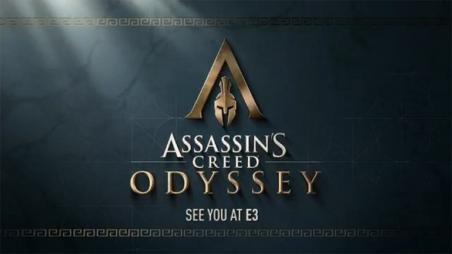
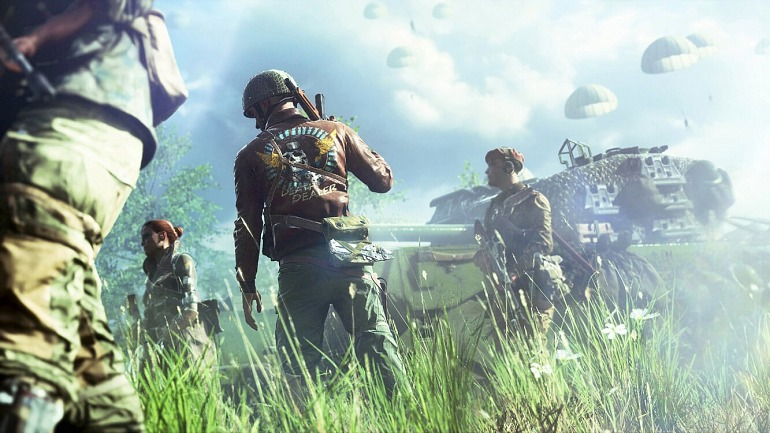

Hemos podido saber en el día de ayer, y gracias al portal KoreaTimes, que la PUBG Corp., es decir la compañía subsidiaria de Bluehole Entertainment y que ha desarrollado PlayerUnknown's Battlegrounds, ha interpuesto una demanda por plagio contra Fortnite.
El portal francés JeuxVideo Live se habría adelantado a los planes de anuncio de Ubisoft en el E3 2018. ¿El culpable? Un inofensivo llavero oficial compartido por una de las fuentes del portal galo, que habría desvelado de un plumazo el título y el contexto histórico del próximo videojuego de la serie: Assassin's Creed Odyssey llevará a los jugadores a Grecia.

Se esperaba con mucho interés una presentación de Cyberpunk 2077, y finalmente el estudio polaco CD Projekt Red ha explicado en un encuentro en directo con el portal norteamericano Gamespot algunas características muy interesantes del videojuego de rol —uno ambientado en el universo del juego de papel y lápiz Cyberpunk 2020, del que toma prestado un sistema de roles que escogemos al principio del juego y que será más permisivo que un sistema de clases tradicional.

Hace unas horas nos hacíamos eco en 3DJuegos de la filtración de Assassin's Creed: Odyssey. Ahora, hace escasos minutos, Ubisoft no ha dejado margen para la especulación y ha confirmado de forma oficial en Twitter su desarrollo. Assassin's Creed: Odyssey, eso sí, presentará sus primeros detalles en el próximo E3 2018.

La semana pasada se produjo la presentación del nuevo Battlefield, y a parte de su fecha de lanzamiento y características jugables se ofreció también un primer tráiler que no ha sido demasiado bien acogido. Ya es el vídeo de la saga con más votos negativos de la historia, y eso se debe a una serie de críticas que la propia Electronic Arts asegura estar escuchando.